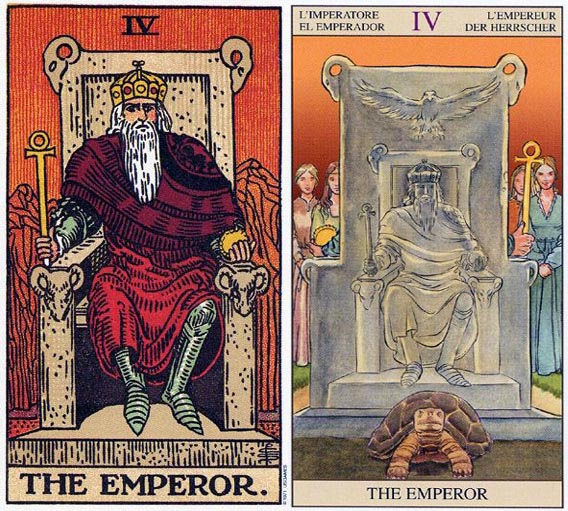

塔罗牌皇帝（The Emperor）解释
相关语：领导 对应星象：狮子座
皇帝表示一种训练和实际致力于生活。皇帝 THE EMPEROR 皇帝代表父亲，法律，生活稳定，也可以指碰到一个年纪及权力在你之上的人。也代表自律和努力而来的成功。逆位的代表缺乏自律与退缩。
皇帝代表原型的父亲。他象征社会的律法、结构，以及容许心灵发展的社会稳定状态。皇帝可以代表执行这些律法的人，像是法官、警察、雇主、房东，或任何在某种状况下要维持秩序和结构的人。
坐在宝座上的皇帝，看来充满威严，当然，他能生杀与夺，权倾朝野，领导大众走向富强。作为一国之君，更是父亲的榜样，否则如何教化他的子民？
这皇帝坐在一张石椅上，左手握着一颗宝球形物体，而右手则握着一根宝杖。宝杖顶端是一个圆圈，它是肉体死亡之后，灵魂生命的象征。他在衣服底下还穿着铁甲，因为他总是处于备战状态。座位顶端和手底下的公羊头说明了这张牌代表占星学上的牧羊座。其他代表牧羊座的牌还有权杖国王和宝剑骑士。
通常皇帝代表的是一个正直、公平和实际的人。假设他给予你忠告，那么他的建议都是来自他自己的亲身经验。他有点武断的倾向，但是当他在许下承诺后，通常，是值得信赖的。而当你也允下承诺时，他会期望你能实行它，假如你做不到，他是不会再给你第二次机会的。
皇帝（The Emperor）牌面解读
宝座上端坐着至高无上的皇帝，他头戴镶嵌着宝石的皇冠，手中掌握着象征权力和地位的权杖。阅历丰富的他面色凝重，即使已经是一国之君，但仍然身着铠甲，时刻准备为国家去迎接挑战。
他统治着整个国家，拥有不容怀疑的权威，他是人民的领袖，是男性权威的象征。然而在他威严的外表后却有着一颗亲切的心，他充满热情，愿意与求教的人分享他的成功秘诀。他的秘诀就是依靠头脑，以及过去努力奋斗时所积累的经验。他的建议也多来自那些宝贵的经验，正如他正直的人格一样值得你信赖。
然而能够支配国家的皇帝就快乐吗？解牌时一定不要忽略这点，因为大多数问卜者所希望的，都是得到心灵的愉悦，即使他们自己可能都没有意识到。威严的表象背后有着怎样的内心世界，往往才是关键之处。
作为一国之君，更是父亲的榜样，否则如何教化他的子民？
皇帝（The Emperor）正位释义
光荣，权力，胜利，握有领导权，坚强的意志，达成目标，父亲的责任，精神上的孤单。
坚强的意志、成绩突出、果断、专制、有领袖风范、值得信赖、物质条件优越、伴侣与你年龄悬殊、嫁妆丰厚
事业通过自律和脚踏实地的努力取得了相当好的成绩，同时务实的态度也会让你在更长的时间里处于事业的巅峰。在感情方面你不太擅长表达，尽管你有很好的物质基础。两性方面你更喜欢扮演父亲的角色，付出的往往是具体的某个事物，而不是情感，所以会感觉有些压抑。
皇帝（The Emperor）逆位释义
幼稚，无力，独裁，撒娇任性，平凡，没有自信，行动力不足，意志薄弱，被支配。
意志薄弱、幼稚、武断、固执、傲慢、疲劳过度、经济基础薄弱、爱情很勉强、痛苦而没结果的恋情
事业会因为固执和武断而遭到失败。感情上因为缺少自我的约束而表现不专一，可能拥有不只一个伴侣。缺乏对伴侣的承诺，也没有坚实的物质基础，所以你很难得到真正的伴侣。
大体上的意义
皇帝意味透过自律和实际的努力而达到成功。它可以代表你生活中一段相当稳定，且井然有序的时光。这张牌可以暗示遭遇到法律上的问题，或是碰到某个地位、权利都在你之上的人，例如法官、警员、父亲，或具有父亲形象的人。
为了成功，现在正是你采取务实态度来面对人生的时候。你被周遭的人设下种种限制，但只要你能在这些限制之内努力的话，你还是可以达成你的目标。
倒立的皇帝
皇帝牌出现倒立时，意味着由于缺乏自律而无法成功。如果是在形容一个人的话，倒立牌代表这个人较具宽容性，而不像正立时那般的武断，而且也较能展现同情心。
有时候此人可能会在面临严苛抉择时退却下来，因为他缺乏向目标迈进所需的训练。他可能会比正立的皇帝表现出多一点的热情，然而却缺乏控制热情的任何真正训练。他需要返回女皇牌（前面那张正立的牌），以充分理解热情和感官，这样才能够在迎接物质和真实世界的挑战时，知道该把这些东西摆在什么位置上。
在有关两性关系的算法中，皇帝牌倒立可能是在形容一种缺乏自律的状态，例如，他可能缺乏对伴侣的承诺，或可能不止拥有一个伴侣。它也可能形容一种母子般的关系，也就是说，这个女人以一种母亲的态度控制着这个男人。
两性关系上的意义
皇帝牌可形容一个务实、武断且通常是纪律严谨的人。他是一个顶不错的物质供应者，然而表达情感对他来说可就不是件简单的事了。浪漫和梦想的事对这个男人的吸引力并不大，因为他较喜欢他看得到、摸得着的东西。假设他无法看见或触碰到它，他是不太可能相信它的。
在两性关系中，这个男人会扮演父亲形象的角色，以确保他能够驾驭这段关系，特别是在物质层面上。由于他的自律和喜欢勤奋地工作，所以通常做生意方面都可以得到成功。
在感情方面他可能会比较压抑，因为他很难理解看不见的东西。在遇上伴侣向他多做了些要求时，他可能会说：“你到底想要什么？你有一个很好的家，一部新车，和所有你想得到的东西，你到底还需要什么？”
在两性关系中，如果伴侣所在意的是情感上的需求，那就会对他造成困扰了。因为对他而言，付出就是给予某些具体的东西。